焦點 1 波的性質
從這個單元開始進入選修物理 III。前面學的都是「一個物體」怎麼動，波動要處理的是「一群質點一起振動，把擾動一路傳下去」。觀念的核心只有一句話：波傳的是能量和波形，不是介質本身 ──球場上的波浪舞，每個觀眾只是站起來坐下，但「波浪」卻繞了整個球場。
一、力學波
需要介質才能傳播的波叫力學波 （繩波、水波、聲波）。依介質振動方向分成兩種：橫波 ：介質振動方向與波前進方向垂直 ，例如繩波。縱波 ：介質振動方向與波前進方向平行 ，例如空氣中的聲波（疏密波）。
二、週期波
波源規律地一直振動，就產生週期波；最簡單的是正弦波。
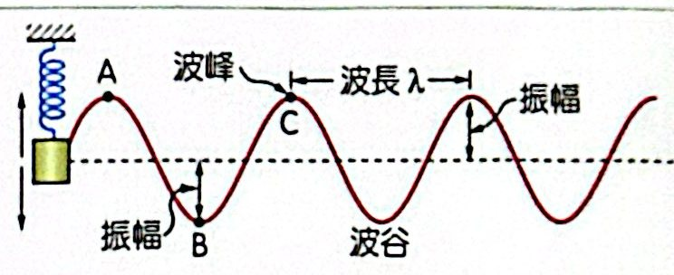
正弦波：波峰、波谷、振幅、波長
振幅 ：質點離開平衡位置的最大距離。頻率 f ：每秒振動的次數，f ＝ 1/T，由波源決定 。波長 λ ：一個週期內波形前進的距離，也是波形重複的最短距離。同相 ：相隔整數個波長的點，位移、速度完全相同；反相 ：相隔半個波長，位移、速度大小相同方向相反。
v ＝ λ/T ＝ fλ 波速 為什麼？ 推導
波源每振動一次（經過一個週期 T），波形剛好往前推進一個波長 λ ⇒ v ＝ λ/T ＝ fλ。
誰決定誰
波速 v 由介質決定 （繩子的張力與線密度、水深、空氣溫度）。頻率 f 由波源決定 ，進入不同介質也不會變。所以波長是被動的：λ ＝ v/f。換介質時 v 改變，f 不變，λ 跟著改變。
判斷質點運動方向（很常考）
把整個波形沿行進方向平移一點點，看該點變高還是變低。
三、繩波
v ＝ √(F/μ) 繩波波速 為什麼？ 各符號
F：繩子張力（N）；μ：線密度，單位長度的質量（kg/m）。
直覺
張力大 ⇒ 繩子被拉得緊，旁邊的質點被「拉回來」的力大，擾動傳得快 ⇒ v 大
線密度大 ⇒ 每一小段比較重（慣性大），不容易被帶動 ⇒ v 小
和彈簧振子 ω ＝ √(k/m) 是同一種結構：「恢復力 ÷ 慣性」再開根號。
單位檢查
F/μ 的單位 ＝ N ÷ (kg/m) ＝ (kg·m/s²)(m/kg) ＝ m²/s² ⇒ 開根號得 m/s ✓
重要推論
波速只和介質有關，和振幅、頻率、波長都無關。同一條繩子上，波速固定。
繩波的反射與透射 ：波遇到端點或兩條繩子的交界，會反射回來（有時也透射過去）。
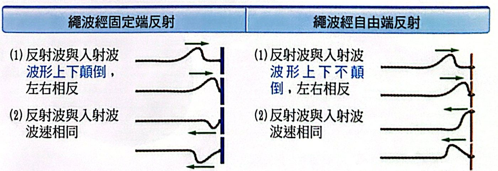
固定端反射（上下顛倒）與自由端反射（不顛倒） 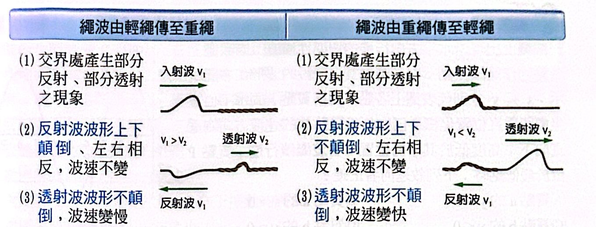
輕繩 → 重繩、重繩 → 輕繩的反射與透射 整理
反射波會不會上下顛倒？ 顛倒 | — |顛倒 | 不顛倒、變慢 |
記法：重繩就像「半個牆」，撞到比較「硬」的一邊才顛倒。透射波永遠不顛倒 ；反射波的波速不變；所有情況左右都相反（前後對調）。
四、波的疊加與干涉
兩個波相遇時，各點的位移就是兩波各自位移的向量和 （疊加原理）；分開之後，兩波各自維持原來的波形與波速繼續前進（獨立性）──這一點和兩顆球相撞完全不同。
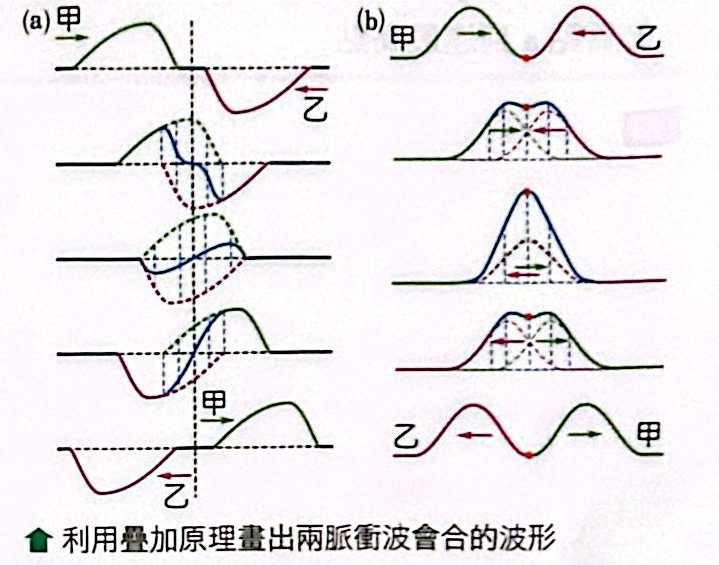
兩脈衝波會合時的疊加
相長（建設性）干涉 ：同相疊加，合成振幅變大。相消（破壞性）干涉 ：反相疊加，合成振幅變小（甚至為零）。
焦點 1 範例與類題
看答案與詳解 收起 答 (A)
解 由圖讀出：波峰在 x ＝ 2、8 m，波谷在 x ＝ 5 m ⇒ λ ＝ 6 m，振幅 4 cm；P 在 x ≈ 4、y ＝ −2。下 運動 ⇒ 波向左 傳播。y ＜ 0 （A ✓、B ✗）
看答案與詳解 收起 答 (B)
解 波向右傳，把波形稍微右移：P 位置將被左邊的波谷那段取代 ⇒ P 向下 運動。
看答案與詳解 收起 答 (A)(C)(D)
解
第一次（輕 → 重）：反射波顛倒 （向下）；透射波不顛倒（向上 ）⇒ (A) ✓
透射波到牆 O（固定端）反射 ⇒ 顛倒成向下；回到 P 由重繩進入輕繩：
第二次透射（重 → 輕）不顛倒 ⇒ 仍向下（B ✗）
第二次反射（重 → 輕）不顛倒 ⇒ 向下
第一次反射向下、第二次反射也向下 ⇒ (C) ✓
每次分成反射與透射，能量被分走，振幅變小 ⇒ (D) ✓
第一次透射在重繩、第二次透射在輕繩，波速不同 ⇒ (E) ✗
看答案與詳解 收起 答 (B)
解 原脈衝向右：B 在左（向下）、A 在右（向上）。向下 、B 在左且向上
看答案與詳解 收起 答 (C)
解 每次反射都前後對調；固定端還要上下顛倒。丙 乙 丁
順序 丙 → 乙 → 丁
焦點 2 繩上駐波
五、駐波
兩個振幅、頻率、波長都相同，但反向前進 的波疊加，合成的波形不會往前走，只在原地一漲一落，稱為駐波 。繩子兩端固定，入射波和反射波就是這樣一對波。
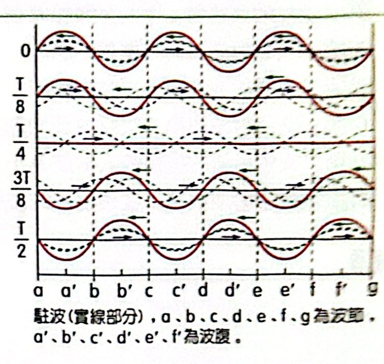
駐波：a、b、c… 為節點；a′、b′… 為腹點
波節（節點） ：永遠不動、位移恆為零的點。波腹（腹點） ：振幅最大的點，位在兩節點正中間。相鄰兩節點（或兩腹點）距離 ＝ λ/2 。駐波的能量在節點之間來回轉換（動能 ↔ 位能），不會往左右傳遞。
兩端固定：L ＝ n·λ/2，fn ＝ nv/(2L) ＝ (n/2L)√(F/μ)（n ＝ 1, 2, 3…） 弦的駐波 為什麼？ 推導
兩端固定 ⇒ 兩端都必須是節點；相鄰節點相距 λ/2，所以弦長必須剛好塞進整數個「半波長」：L ＝ nλ/2 ⇒ λn ＝ 2L/nn ＝ v/λn ＝ nv/(2L)
名稱
n ＝ 1 為基頻 （基音、第一諧音）；n ＝ 2 為第一泛音（第二諧音）＝ 2f1 ；依此類推。所有整數倍都會出現 。
應用
吉他換把位（按住弦）＝ 縮短 L ⇒ 音變高；按在中點，L 變一半，頻率變 2 倍。
調緊弦 ＝ F 變大 ⇒ v 變大 ⇒ 音變高。
粗弦（μ 大）⇒ 低音弦。
一端固定一端自由：L ＝ n′·λ/4，f ＝ n′v/(4L)（n′ ＝ 1, 3, 5…） 開口端的駐波 為什麼？ 推導
固定端是節點、自由端是腹點 ；節點到最近的腹點距離 λ/4，之後每加一段 λ/2：奇數 。
和兩端固定比較
同樣長度，基頻只有兩端固定時的一半（λ 是 4L 而不是 2L）。
只有奇數倍 的諧音：f1 、3f1 、5f1 …。第 10 單元的「閉管」空氣柱也是一樣的數學。
解題訣竅
不用背公式：畫出駐波的簡圖（固定端畫節點、自由端畫腹點），數有幾個 λ/4 或 λ/2，直接得到 λ 與 L 的關係。
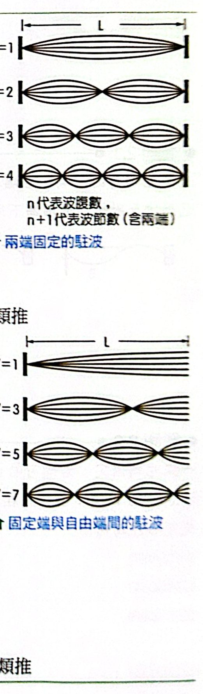
兩端固定（左）與一端固定一端自由（右）的駐波 焦點 2 範例與類題
看答案與詳解 收起 答 (A)(C)(D)
解
(A) ○ μ ＝ 0.010/5.0 ＝ 2.0×10−3 kg/m
(B) ✗ PQ 間 3 個節點（不含兩端）⇒ 共 4 段，λ/2 ＝ 1 m ⇒ λ ＝ 2 m
(C) ○ F ＝ 1.0 × 9.8 ＝ 9.8 N，v ＝ √(9.8/0.002) ＝ √4900 ＝ 70 m/s
(D) ○ f ＝ v/λ ＝ 70/2 ＝ 35 Hz
(E) ✗ 50 Hz：λ ＝ 1.4 m，4.0 ÷ 0.7 不是整數，無法形成駐波
看答案與詳解 收起 答 (1) 90 (2) 25
解 節點間距 ＝ L/n（n 段）：L/n ＝ 18、L/(n ＋ 1) ＝ 15 ⇒ 18n ＝ 15n ＋ 15 ⇒ n ＝ 5 ⇒ L ＝ 90 cm 25 Hz
看答案與詳解 收起 答 (A)(B)(C)
解 基頻：L ＝ λ/4 ⇒ λ ＝ 2 m（C ✓），只有一個腹點（A ✓）400 N （D ✗）1 ⇒ L ＝ 3λ/4，只有 2 個 腹點（E ✗）
看答案與詳解 收起 答 (1) 98 (2) 245
解 由圖：振盪器端為節點，套環端為腹點，弦上有 2.5 個「腹」⇒ L ＝ 5λ/4 ⇒ λ ＝ 0.4 m98 N 245 Hz
看答案與詳解 收起 答 (1) 80 (2) 500
解 一個腹點（基頻）：L ＝ λ/4 ⇒ λ ＝ 0.8 m ⇒ v ＝ 100 × 0.8 ＝ 80 m/s 1 ＝ 500 Hz
焦點 1、2 練習題
看答案與詳解 收起 答 (D)
解 0.9 s 內各移動 9 m：左脈衝（高 1）中心 −8 → ＋1；右脈衝（高 2）中心 ＋8 → −1。丁 。
看答案與詳解 收起 答 (A)
解 兩段頻率相同；v ∝ 1/√μ ⇒ v1 /v2 ＝ √(5/4) ＝ √5/2，λ ∝ v。1 有 3 個半波長、L2 有 2 個半波長：1 /L2 ＝ (3λ1 /2)/(λ2 ) ＝ 1.5 × √5/2 ＝ 3√5 : 4
看答案與詳解 收起 答 (B)
解 6 個腹點：f ＝ 6v/(2L)。張力 4 倍 ⇒ v 變 2 倍 ⇒ 新頻率 fn ＝ n(2v)/(2L) ＝ nf/3f/3
看答案與詳解 收起 答 (D)
解 虎克：張力 F ∝ 伸長量；線密度 μ ∝ 1/長度。
比值 4 ⇒ 波速變 2v
看答案與詳解 收起 答 (E)
解 由圖：甲 λ ＝ 2L、乙 λ ＝ L、丙 λ ＝ 2L/3、丁 λ ＝ L/2L/(12v)
最早出現波峰的是乙 ✓(D)；最早出現波谷的是丙 ，不是甲 ⇒ (E) 錯誤
看答案與詳解 收起 答 (C)
解 波向右傳，P 接下來的位移就是「P 左邊的波形」依序傳過來。右側 （先有小肩膀，再到大波峰）。(C)
看答案與詳解 收起 答 (A)(B)
解
(A) ○ 固定端反射顛倒
(B) ○ 自由端反射不顛倒
(C) ✗ 接到較輕的繩 ⇒ 反射波不顛倒 ，方向相同
(D) ✗ 接到較重的繩 ⇒ 反射波顛倒，方向相反
(E) ✗ 透射波永遠不顛倒，與入射波同方向
看答案與詳解 收起 答 1/6
解 同材質同張力 ⇒ 波速相同；f1 ＝ v/(2L)。甲1 ＝ 2 × 3f乙1 ＝ 6f乙1 ⇒ L甲 ＝ L乙 /6
看答案與詳解 收起 答 10；20
解 v ＝ 1/0.05 ＝ 20 m/s；f1 ＝ v/2L ＝ 10 Hz ；第一泛音 ＝ 2f1 ＝ 20 Hz
看答案與詳解 收起 答 2L/3
解 三個腹點：L ＝ 3 × λ/2 ⇒ λ ＝ 2L/3
看答案與詳解 收起 答 (C)
解 基頻 f ＝ v/(2L)。要同時看到兩個最大位移的「殘影」，半個週期要短於視覺暫留 1/20 s ⇒ T ≤ 1/10 s ⇒ f ≥ 10 Hz。10 (D) 8 (E) 6.7 ⇒ 只有 (C)
看答案與詳解 收起 答 (B)
解 由圖：實線波峰在 x ＝ 0、4、8 ⇒ λ ＝ 4 m；虛線（0.5 s 後）波峰在 x ＝ 1、5 ⇒ 波形右移 1 m ＋ 整數個 λ。18 m/s
看答案與詳解 收起 答 (B)(D)
解
(A) ✗ 密度愈大 v 愈小
(B) ○
(C) ✗ 基頻 v/(2ℓ)
(D) ○ 基頻時中點是腹點
(E) ✗ 動能與 f² 有關（還與振幅有關），不是一次方
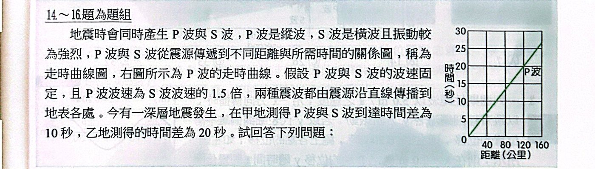
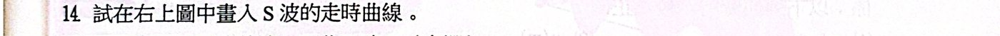
看答案與詳解 收起 答 S 波為通過原點、斜率為 P 波 1.5 倍的直線
解 由圖 P 波：120 km 需 20 s ⇒ vP ＝ 6 km/s；vS ＝ 6/1.5 ＝ 4 km/s
看答案與詳解 收起 答 (B)(D)(E)
解 時間差 Δt ＝ d/4 − d/6 ＝ d/12120 km （C ✗）；乙：20 s ⇒ 240 km，是甲的 2 倍（D ✓）
看答案與詳解 收起 答 (C)
解 地震發生後：甲的 P 波 20 s 到、再 10 s 發布預警 ⇒ 第 30 s30 s
焦點 1、2 歷屆試題
看答案與詳解 收起 答 (D)
解 按住中點 ⇒ 振動弦長變一半，張力不變 ⇒ 波速不變 ⇒ 基頻變 2 倍
看答案與詳解 收起 答 (C)
解 由圖：P 波約 22 s、S 波約 35 s 到達宜蘭（141 km）P ≈ 141/22 ≈ 6.4 km/s、vS ≈ 141/35 ≈ 4.0 km/s26 s
看答案與詳解 收起 答 (D)
解 由圖 λ ＝ 2.0 m、v ＝ 5.0 m/s ⇒ T ＝ 0.4 s（排除 A、B、E）下 運動 ⇒ 圖形從 0 先往下 ⇒ (D)
看答案與詳解 收起 答 (D)
解 最低音頻 264 Hz 就是基頻（A ✗）；λ ＝ 2L ＝ 3.00 m（B ✗）短 （C ✗）弦上 的波速（E ✗）
焦點 3 水波
六、水波槽與波前
水波槽用光從上方照射，水面凸起處像凸透鏡把光匯聚，在槽底白紙形成亮紋 ；凹下處形成暗紋。
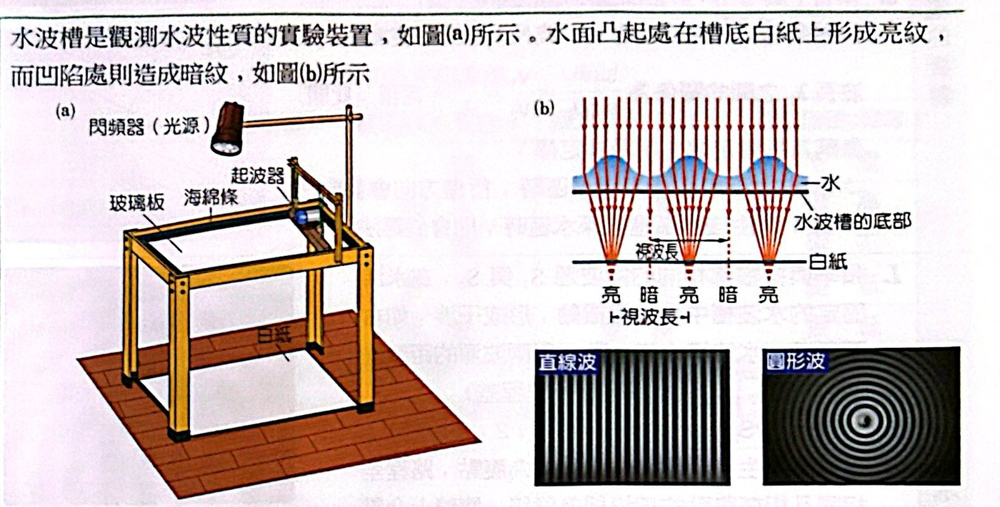
水波槽與亮暗紋的形成
波前 ：同一時刻、波所到達（振動狀態相同）的點的連線。通常標記波峰的連線，所以相鄰波前的距離就是波長。波的行進方向與波前垂直 。
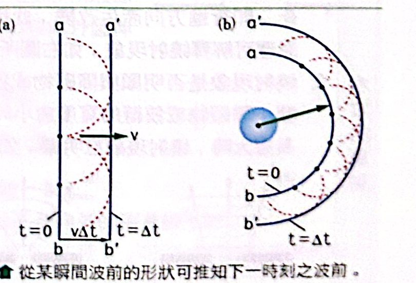
惠更斯原理：波前上每一點都是新的點波源 惠更斯原理 ：波前上的每一點都可看成新的點波源，各自發出圓形子波；與這些子波相切的包絡線就是下一刻的波前。用它可以解釋反射、折射與繞射。
七、水波的折射
水愈深，水波愈快（v ∝ √h）。深水區和淺水區相當於兩種介質，水波斜射進入時會轉彎。
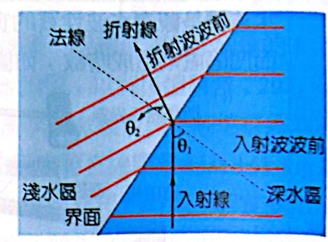
水波由深水區進入淺水區的折射 sinθ1 /sinθ2 ＝ v1 /v2 ＝ λ1 /λ2 ＝ 定值 折射定律 為什麼？ 推導（用惠更斯原理）
一段波前斜斜地碰到界面。波前的一端先進入新介質，另一端還在舊介質中走。1 Δt、新介質那端走了 v2 Δt，兩段都是共同斜邊（界面上的長度 AB）乘上入射角或折射角的正弦：1 ＝ v1 Δt、AB sinθ2 ＝ v2 Δt ⇒ 相除得 sinθ1 /sinθ2 ＝ v1 /v2
直覺：行軍隊伍
一排士兵斜斜地從柏油路走進泥地：先踏進泥地的人先變慢，整排就朝泥地那一側轉彎。偏向法線 ；由慢進入快，偏離法線。
注意
入射角 θ 是「波行進方向與法線」的夾角，也等於「波前與界面 」的夾角──題目常畫的是波前。
八、水波的干涉
兩個同相振動的點波源 S1 、S2 ，在水面上形成穩定的干涉圖樣。
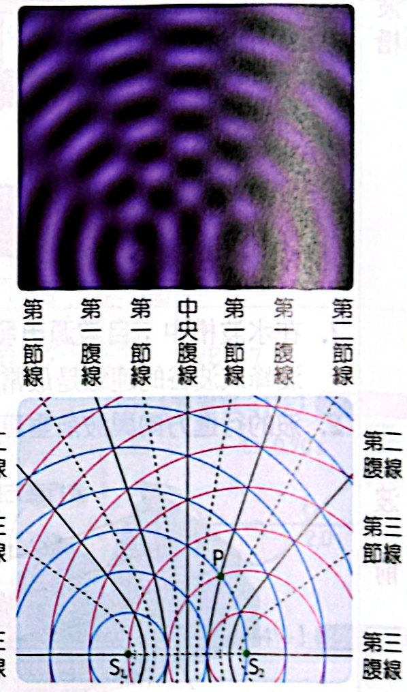
兩同相點波源的干涉：腹線與節線 腹線： PS_{1} − PS_{2}| ＝ nλ；節線：|PS_{1} − PS_{2}| ＝ (m − ½)λ | 路程差決定干涉 為什麼？ 推導
兩波源同時發出同相的波。P 點收到的兩個波走了不同的路：完全建設性干涉，腹點 完全破壞性干涉，節點
路程差相同的點連起來是一條雙曲線，就是腹線或節線。中垂線路程差為 0，是中央腹線 。
在白紙上看起來
腹線：振幅最大，一會凸一會凹 ⇒ 亮暗交錯、看起來往外移動
節線：不凸不凹 ⇒ 穩定的灰紋
數腹線、節線（很常考）
路程差最大只能等於兩波源間距 d：|PS1 − PS2 | ≤ d。max ，總數 2nmax ＋ 1max 1 S2 向外的延長線；若只問「兩波源之間」，要扣掉延長線。
九、繞射
波通過狹縫或障礙物邊緣時，會「彎」到後面的陰影區，這就是繞射 （用惠更斯原理，狹縫上的每一點都是新波源）。
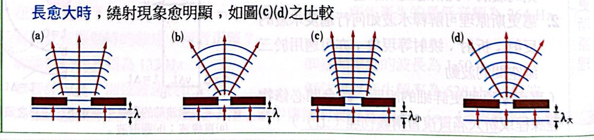
繞射：縫愈小、波長愈大，繞射愈明顯
狹縫或障礙物愈小 、波長愈大 ，繞射愈明顯。
縫寬遠大於波長時，波幾乎直直穿過去，看不出繞射。
這就是為什麼隔著牆聽得到聲音（聲波波長約公尺級），卻看不到牆後的人（光波長極短）。
十、都卜勒效應
當波源或觀察者在移動，觀察者量到的頻率會改變──救護車靠近時鳴笛聲變尖、遠離時變低沉。
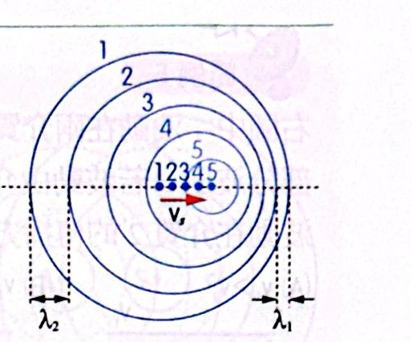
移動波源：前方波長變短、後方變長 λ前 ＝ λ − vs T、λ後 ＝ λ ＋ vs T；觀察者頻率 f′ ＝ v′/λ′ 都卜勒效應 為什麼？ 波源移動 → 改變波長
波源在一個週期內發出一個波長的波，但這段時間它自己也往前走了 vs T，追著前面的波前跑 ⇒ 前方的波前被擠在一起：λ前 ＝ λ − vs T；後方被拉開：λ後 ＝ λ ＋ vs T。前 變高，後方變低。
觀察者移動 → 改變相對波速
波長沒變，但觀察者迎向波前跑，每秒「撞到」的波前變多 ⇒ 相對波速 v′ ＝ v ＋ vo ，f′ ＝ v′/λ 變高；遠離則變低。
波源
觀察者
v′
λ′
f′
靜止
接近
變大
不變
變高
接近
靜止
不變
變短
變高
靜止
遠離
變小
不變
變低
遠離
靜止
不變
變長
變低
總結
接近 ⇒ 頻率變高；遠離 ⇒ 頻率變低 。相對運動方向和兩者連線垂直時沒有都卜勒效應。
焦點 3 範例與類題
看答案與詳解 收起 答 (C)(E)
解 由界面折射，波前的傾斜方向不會反轉（B ✗），也不會變成和界面平行（A、D ✗；D 中 v1 ＝ v2 應完全不轉彎）。1 ＞ v2 ：進入慢介質偏向法線，波前變得較平 （與界面夾角變小）⇒ (C) ✓1 ＜ v2 ：偏離法線，波前變得較陡 ⇒ (E) ✓
看答案與詳解 收起 答 √6 ≈ 2.4；24√6 ≈ 59；72
解 頻率 24 Hz 不變，深水區 v2 ＝ 24 × 3 ＝ 72 cm/s 1 /λ2 ＝ sin45°/sin60° ⇒ λ1 ＝ 3 × (√2/2)/(√3/2) ＝ √6 ≈ 2.4 cm 1 ＝ 24√6 ≈ 59 cm/s
看答案與詳解 收起 答 (A)
解 v² ∝ 水深 ⇒ v深 /v淺 ＝ √2 ⇒ sinθ2 ＝ √2 sinθ1 （由淺入深，偏離法線）
看答案與詳解 收起 答 (A)(D)(E)
解 由圖量尺寸：每個波源的同心圓，實線（波峰）與實線相距 λ，實線與虛線相距 λ/2；S1 S2 間距剛好 3 個 λ/2 ⇒ d ＝ 3λ/2 （A ✓）波峰 的交點 ⇒ 路程差 0，在中央腹線上（B ✗）
看答案與詳解 收起 答 (A)(B)(D)
解 λ ＝ 4 cm，d ＝ 20 cm ＝ 5λ；PS2 ＝ 25 cm ⇒ 路程差 10 ＝ 2.5λ ＝ (3 − ½)λ ⇒ 第 3 條節線（A ✓）
看答案與詳解 收起 答 (B)(E)
解 λ ＝ v/f ＝ 200/25 ＝ 8 cm；d ＝ 24 cm ＝ 3λ1 為 x：路程差 24 − 2x ＝ 20（＝ 2.5λ）⇒ x ＝ 2 cm
焦點 3 練習題
看答案與詳解 收起 答 (B)
解 第 2 條節線：路程差 (2 − ½)λ ＝ 1.5 × 4 ＝ 6 cm
看答案與詳解 收起 答 (E)
解 通過後仍近乎直線波 ⇒ 繞射不明顯 ⇒ 開口遠大於波長 d ≫ λ
看答案與詳解 收起 答 (C)
解 波源向左移動，左方是「前方」：λ′ ＝ λ − vs T ＝ λ − (v/4)T ＝ 3λ/4
看答案與詳解 收起 答 (E)
解
(A) ✗ 波速與水深有關，頻率固定時波長也與水深有關
(B) ✗ 圓形波經直線邊反射仍是圓形波
(C) ✗ 圓形入射波與圓形反射波疊加不會形成駐波
(D) ✗ 亮紋對應波峰（水面凸起聚光）
(E) ○ 反射波就像從鏡像位置（O 對 AB 的對稱點，在 OO′ 延長線上距 O′ 為 d）發出
看答案與詳解 收起 答 (C)
解 船是波源，向北移動 v/9：北方（前方）λ北 ＝ λ(1 − 1/9) ＝ 8λ/9 ＝ 4 ⇒ λ ＝ 4.5 m南 ＝ λ(1 ＋ 1/9) ＝ 5 m
看答案與詳解 收起 答 (A)(C)(D)
解 λ ＝ 200/100 ＝ 2 cm（C ✓）；PS2 ＝ √(13² − 12²) ＝ 5 cm2 到 P 的路程差由 12（S2 處）遞減到 8（P 處），會經過 11、9 兩個節點值−2 s
看答案與詳解 收起 答 (A)
解 兩邊交替起伏 ⇒ 兩壁都是腹點、中央是節點 ⇒ L ＝ λ/2 ⇒ λ ＝ 1.5 m0.67 Hz
看答案與詳解 收起 答 見詳解
解 節線 ＝ 波峰（實線）與波谷（虛線）交點的連線，是以 S1 、S2 為焦點的雙曲線。
看答案與詳解 收起 答 (C)
解 延長線上路程差 ＝ d；第三節線 ⇒ d ＝ (3 − ½)λ ＝ 5λ/2
看答案與詳解 收起 答 d ＜ λ/2
解 連第一節線（路程差 λ/2）都不出現，需兩波源間距 d ＜ λ/2（路程差最大就是 d）。
焦點 3 歷屆試題
看答案與詳解 收起 答 (B)
解 第二滴落水時（t ＝ 3.0 s），兩圈漣漪相會：
f ＝ 1/T ＝ 2.0 Hz
看答案與詳解 收起 答 (A)(D)
解
(A) ○ 間距愈大，d/λ 愈大，節線愈多
(B) ✗ 波長愈長，腹線愈少
(C) ✗ 兩波源間的腹線數為奇數、節線數為偶數，不會相同
(D) ○ 節線上水面不起伏，亮度幾乎不變
(E) ✗ 腹線上水面劇烈起伏，亮暗交替
素養試題
看答案與詳解 收起 答 λ：0.8、0.6、0.48 m；f：45、60、75 Hz；v：36 m/s
解 兩端都是節點：L ＝ nλ/2 ⇒ λ ＝ 2.4/n
看答案與詳解 收起 答 變大
解 砝碼變重 ⇒ 張力 F 變大 ⇒ 波速 v ＝ √(F/μ) 變大；腹數相同 ⇒ λ 不變 ⇒ f ＝ v/λ 要變大 。
看答案與詳解 收起 答 能產生駐波（2 個腹）
解 質量 4 倍 ⇒ 張力 4 倍 ⇒ 波速 2 倍 ＝ 72 m/s兩個腹點 的駐波（中點為節點）。